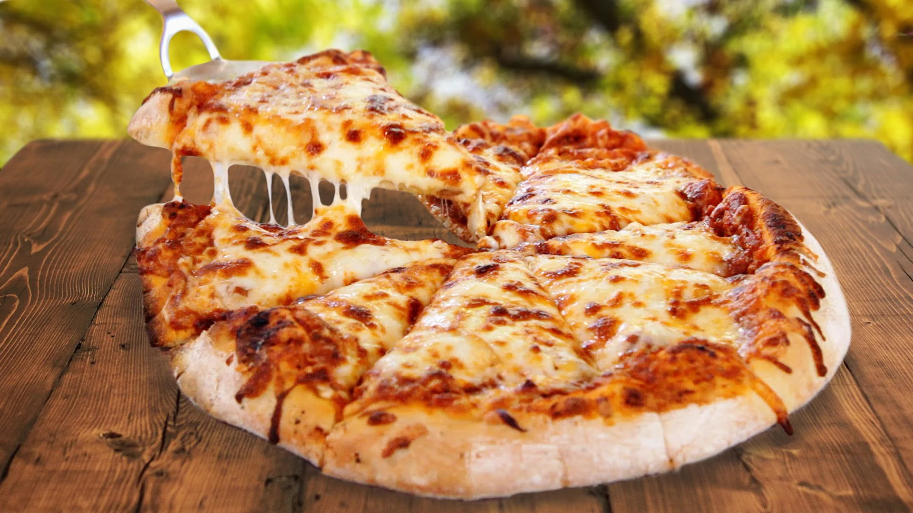

Cheese Pizza

Description
Pizza is a popular dish that originated in Italy, specifically in the city of Naples. It is made by baking a flatbread dough topped with tomato sauce, cheese, and other ingredients, such as meats and vegetables. The origins of pizza can be traced back to the ancient Greeks, who ate a similar type of food called "plakous," which consisted of flatbread topped with honey, cheese, and herbs. The modern pizza as we know it today was developed in Naples in the 18th century, and it quickly became a popular dish among the poor who could afford the cheap and filling meal. Over time, pizza became popular all over Italy and eventually spread to other parts of the world.
Ingredients
- Pizza dough
- Tomato sauce
- Mozzarella cheese
- Parmesan cheese
- Olive oil
- Salt
- Fresh herbs, such as basil or oregano (optional)
Steps
- Preheat your oven to 450°F (230°C) and lightly oil a pizza pan or baking sheet.
- Roll out the pizza dough on a lightly floured surface until it is the desired size and thickness. Transfer the dough to the prepared pan or baking sheet.
- In a saucepan or skillet, heat the tomato sauce over medium heat.
- Spoon the sauce onto the dough, spreading it evenly over the surface.
- Sprinkle the mozzarella cheese over the sauce, followed by the Parmesan cheese.
- Drizzle the pizza with a little olive oil and sprinkle with salt.
- Bake the pizza in the preheated oven for 10-15 minutes, or until the crust is golden brown and the cheese is melted and bubbly.
- Remove the pizza from the oven and sprinkle with fresh herbs, if desired.
- Slice the pizza and serve it hot. Enjoy!